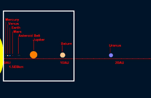
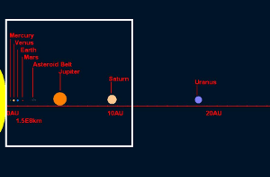

Everything you always wanted to know about the Internet, but were afraid to ask.

Everything you always wanted to know about the Internet, but were afraid to ask.
Jordan Kasper
jordan@jordankasper.com | @jakerella
You can see these slides at jordankasper.com/internet
I've been working in web development for over 15 years, and I've been online since 1994. I'm currently the head of application development at Ten Fast Feet, a Nashville-based interactive agency.
Image reference: http://www.psdgraphics.com/psd-icons/cloud-computing-icon/
Where you wanna go?

URL
(Human readable addressing)

But we really want to go here: 36.16085, -86.773903
(more on that shortly)
This is how we do it

HTTP
But what is a protocol?
http://tweattwaddle.blogspot.com/2012/01/kitty-and-vicky-visit-japan.html
Other protocols you probably know of... FTP, POP, SMTP, SSL, DHCP, TCP, SSH, ...
Catchy Title

Any port in a storm...


http://www.beggsandpartners.com/plumbing-heating/overview/
Into the cloud

Into the cloud

Into the cloud

這是一個翻譯
We just typed in "http://www.google.com/reader/view/" ...

We need a translator!
Remember our street address to GPS coordinate example? Same deal!
這是一個翻譯
Translating domains into Internet Protocol (IP) addresses

http://www.witnessthis.co.za/2009/10/05/incentive-to-work/telephone-exchange/
Down the line...
The first machine to know the answer wins!

How would your computer already know the Ip address for "google.com"? Through it's DNS cache. It holds onto a number of addresses just in case you use them again soon.
Down the line...
The first machine to know the answer wins!

So what if none of those machines knows the answer? Then you get an error page. Trying going to http://hfirnhocuwgkfhgt.com
So many numbers
Now we know where to go to get content from Google: 74.125.227.36
But what is that number?
It's an IP - address.
A machine-readable identifier for a network interface (not for the whole machine!)
IPv4
Set of four numbers between 0 and 255 (that's 8 bits each, making a 32-bit address):
| 74. | 125.227.26 |
| Network Identification (0-127, Class A) | Host (interface) Identification |
 VS.
VS.

http://www.justbathroomsigns.com/Restroom/No-Public-Restroom-Signs.aspx
http://thesocietypages.org/cyborgology/2012/08/06/a-new-privacy-full-essay-parts-i-ii-and-iii-2/digital-privacy/
Home + network = Homework
Your machine has an IP address, too! But how did you get it?

Home + network = Homework
Your machine has an IP address, too! But how did you get it?

Home + network = Homework
Your machine has an IP address, too! But how did you get it?

I can haz IP?
IPv4 vs. IPv6
Why the need for a new version of IP addressing?
Seems to work just fine...
IPv4
- format: 192.168.1.67
- 32-bit addressing (4 places, 8 bits each)
- 2^32 possible IPs = 4,294,967,296 (~4.3 billion)
- Started running out April 15, 2011
IPv6
- format: 2001:db8:85a3:42:0:8a2e:370:7334
- 128-bit addressing (8 places, 16 bits each)
- 2^128 possible IPs = 340,282,366,920,938,463,463,374,607,431,768,211,456
One pixel per address...
 
http://pthree.org/2009/03/08/the-sheer-size-of-ipv6/

http://pthree.org/2009/03/08/the-sheer-size-of-ipv6/
When we say we started "running out" of addresses, what we mean is that large blocks of addresses had been allocated to specific companies, governments, educational institutions, etc, and while they may still have unassigned addresses, no more large blocks are available.
Anatomy 101
The HTTP REQUEST data
http://www.google.com/reader/view/
GET /reader/view/ HTTP/1.1 Host: www.google.com Accept: text/html,application/xhtml+xml,application/xml;q=0.9,*/*;q=0.8 Connection: keep-alive Cookie: 1%2FcA8CoqFFr9udmhMd2NpbtBcfH9Rzdd9fE5ISkdmB%2F2012-10-09+22%3A21%3A59 User-Agent: Mozilla/5.0 (X11; Linux i686) AppleWebKit/537.4 (KHTML, like Gecko) Chrome/22.0.1229.79 Safari/537.4

http://www.quickmeme.com/meme/3qehyt/
Sample Cookie Data:
1%2FcA8CoqFFr9udmhMd2NpbtBcfH9Rzdd9fE5ISkdmB%2F2012-10-09+22%3A21%3A59
Not what I.M. Pei would do...
Typical Web Server Architecture

LAMP
It renders you helpless...
And now the html and CSS are rendered by the browser

(This is not part of my presentation.)
I'll GET you my pretty, and your little POST, too
You've heard of GET and POST...
but are you using them correctly?
GET
Data Retrieval

POST
Data Updating
http://cheezburger.com/6339194624
One foot in front of the other

http://www.adaptivepath.com/ideas/ajax-new-approach-web-applications
Come with me if you want to live...
SSL -
allows a client (your browser)
to encrypt data sent to (and coming
back from) a server (in our case a web server).

Unchained Heat
But what if the web site didn't want to pay up to $3,000
for a certificate from a root authority like Verisign?
I hear you can get one for $8 some places...
Chained Certificates

http://datacenteroverlords.com/2011/09/25/ssl-who-do-you-trust/
Unchained Heat
But what if the web site didn't want to pay up to $3,000
for a certificate from a root authority like Verisign?
I hear you can get one for $8 some places...
Chained Certificates

http://datacenteroverlords.com/2011/09/25/ssl-who-do-you-trust/